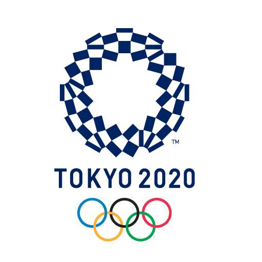

<mat-toolbar color="primary">
      <span class="meni-span">
            <a routerLink="/"></a>
      </span>
      
      <a mat-button [matMenuTriggerFor]="menu" style="font-size: large;">
            Ucesnici
            <mat-icon>arrow_drop_down</mat-icon>
      </a>
      <mat-menu #menu="matMenu">
            <button routerLink="/zemlje" mat-menu-item style="background-color: #4447a6; color: white;">Zemlje</button>
            <button routerLink="/sportisti" mat-menu-item style="background-color: #4447a6; color: white;">Sportisti</button>
      </mat-menu>
      
      <span class="meni-span">
            <a routerLink="/medalje">Osvojene Medalje</a>
      </span>

      <!-- funkcije organizatora -->
      <span class="meni-span"  *ngIf="organizator">
            <a routerLink="/organizator/approve/users">Odobri Korisnike</a>
      </span>

      <a mat-button [matMenuTriggerFor]="menuOrganiz" style="font-size: large;" *ngIf="organizator">
            Dodaj
            <mat-icon>arrow_drop_down</mat-icon>
      </a>
      <mat-menu #menuOrganiz="matMenu">
            <button routerLink="/organizator/add/sports" mat-menu-item style="background-color: #4447a6; color: white;">Dodaj Sportove i Discipline</button>
            <button routerLink="/organizator/add/forma" mat-menu-item style="background-color: #4447a6; color: white;">Dodaj Forme</button>
            <button routerLink="/organizator/add/takmicenje" mat-menu-item style="background-color: #4447a6; color: white;">Dodaj Takmicenja</button>
      </mat-menu>

      <span class="meni-span"  *ngIf="organizator">
            <a routerLink="/organizator/complete/takmicenje">Potvrdi Takmicenje</a>
      </span>

      <!-- funkcije vodje -->
      <span class="meni-span"  *ngIf="vodja">
            <a routerLink="/vodja/add/sportista">Dodaj Sportistu</a>
      </span>

      <span class="meni-span"  *ngIf="vodja">
            <a routerLink="/vodja/prijava/sportista">Prijavi Sportistu</a>
      </span>

      <span class="meni-span"  *ngIf="vodja">
            <a routerLink="/vodja/ucitavanje/fajla">Ucitaj Sportiste</a>
      </span>

      <!-- funkcije delegata -->
      <span class="meni-span"  *ngIf="delegat">
            <a routerLink="/delegat/unesi/vreme">Unesi Vreme</a>
      </span>

      <span class="meni-span"  *ngIf="delegat">
            <a routerLink="/delegat/odaberi/takmicenje">Unesi Rezultate</a>
      </span>

      
      <span class="spacer"></span>
      <ul>
            <li class="meni-span"  *ngIf="!organizator && !vodja && !delegat">
                  <button mat-raised-button color="warn" routerLink="/register">Register</button>
            </li>
            <li class="meni-span" *ngIf="!organizator && !vodja && !delegat">
                  <button mat-raised-button style="background-color: green; color: white;"  routerLink="/login">Login</button>
            </li>
            <li class="meni-span">
                  <button mat-raised-button style="background-color: green; color: white;"  routerLink="/change/password">Change Pass</button>
            </li>
            <li  *ngIf="organizator || vodja || delegat">
                  <button mat-raised-button color="warn" (click)="logout()">Logout</button>
            </li>
      </ul>
</mat-toolbar>
          